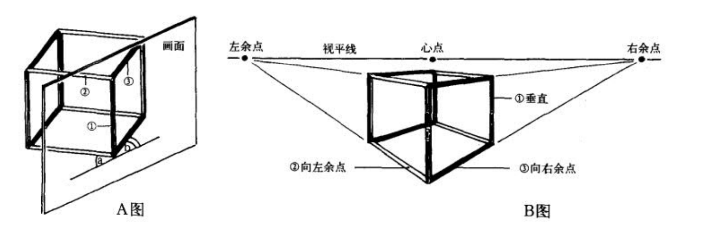
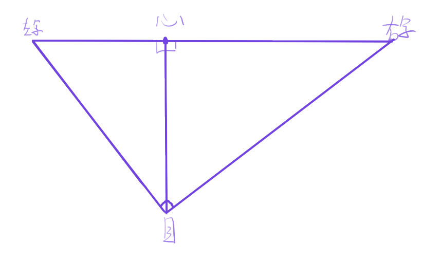
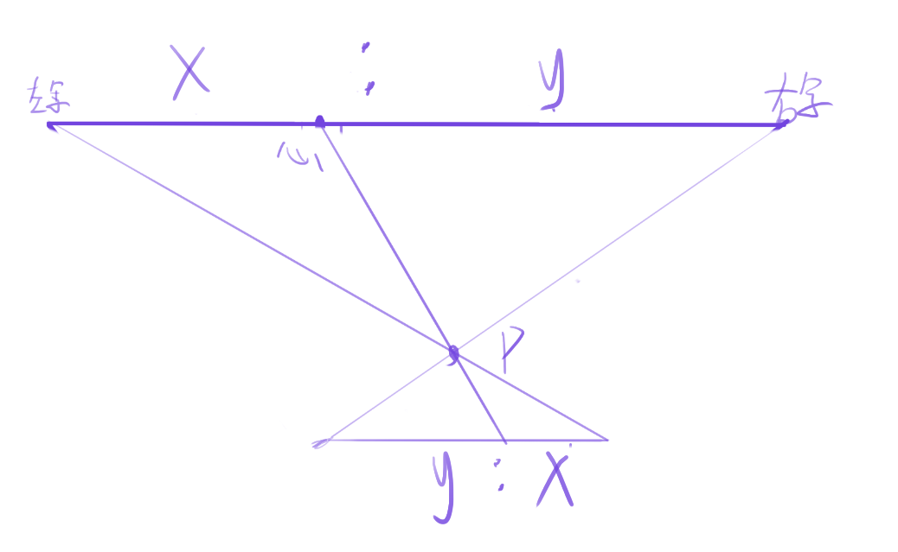
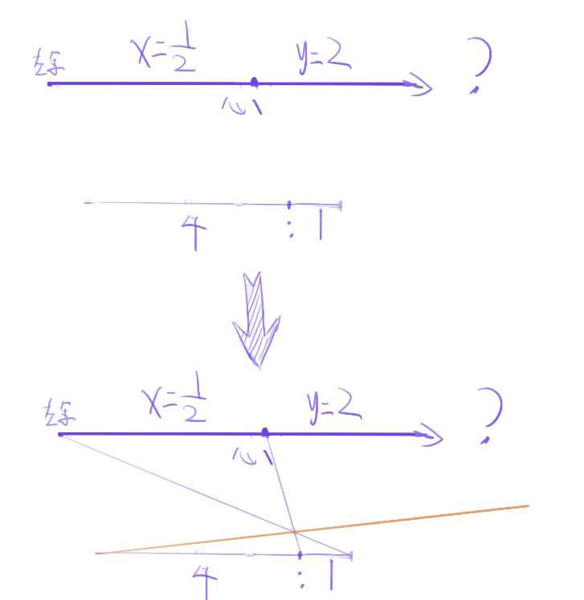
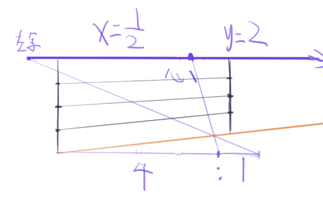
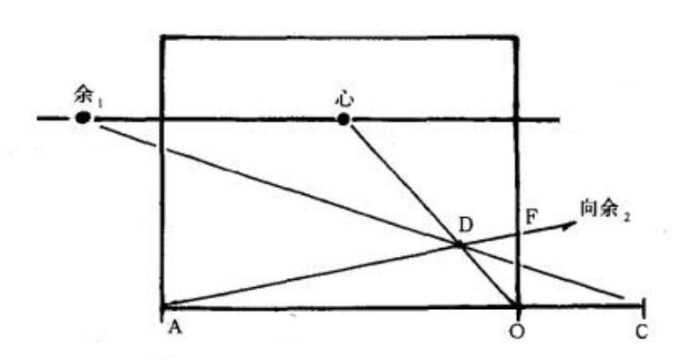
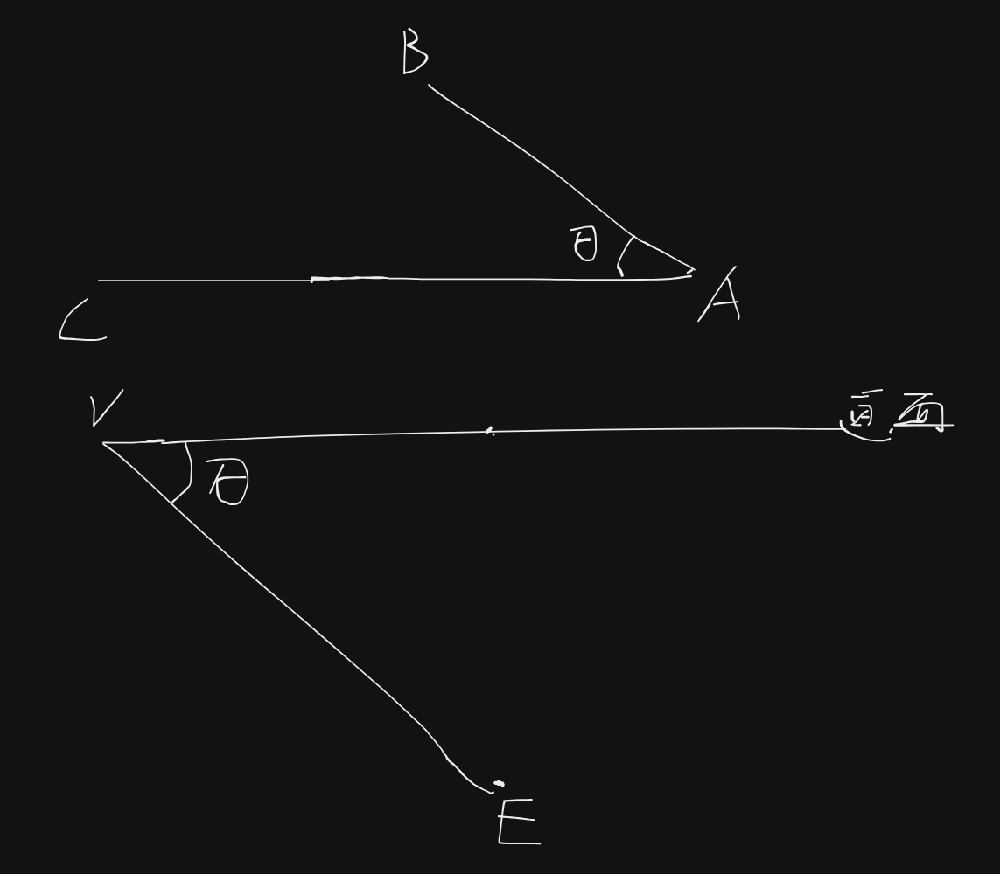
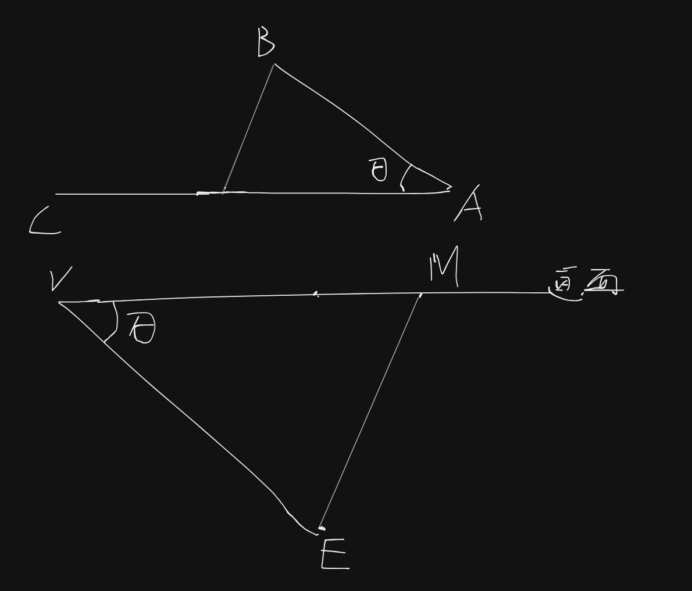
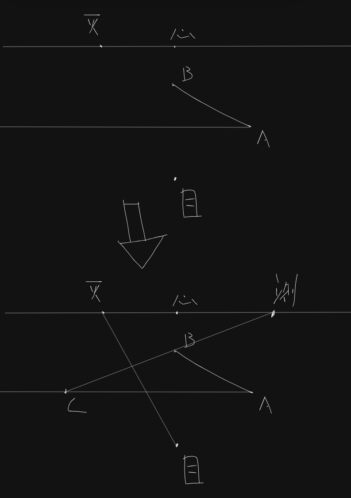

透视学习 04——余角透视
平行透视和余角透视是最常见的透视，把握它们时，不止要把握概念，还要在具体实践中反复磨练，后面要为这两种透视的各种实际问题写 cookbook，去真正把这里学到的东西给用起来。
上回说到，考虑平视平放方物，该方物有两对竖立面；一对竖立面平行于画面时，为平行透视；两对竖立面和画面均不平行时，为余角透视。余角透视方物有三个透视方向，分别是垂直，向左余点和向右余点。

在之前的学习中，我们知道，余角透视的方物，无论它的旋转角度，它的两个余点和目点在画面上同在一个圆上：

TODO 书里的例子似乎说明对角线比棱边更重要，研究研究。
之前学习的时候研究过两个余点到心点的距离的关系，设一个余点距心点的距离为 x，另一个为 y，而心距长为 d，有：
这个看上去没有实用价值，但其实是有的——当这个余点距心点的距离为 n 分之一心距时，另一个余点距心点的距离为 n 心距，也就是说，x=1/2 时 y=2，x=1/3 时 y=3，x=3/2 时 y=2/3，这个允许我们快速地做心算。
辅助线处理远余点
在绘制余角透视的时候，很多时候两个余点是一远一近的，怎么处理较远的那个余点？
先明确我们要依赖的东西——利用三角形相似——已知两个余点和心点在同一条直线上；我任选一个点 P，然后做三角形左余点-P-右余点，然后延长左余点-P，右余点-P，再做一个平行于视平线的直线，从而包围出一个和三角形左余点-P-右余点相似的三角形：

那怎么利用这个方法呢？我们可以任意做一个和视平线平行的线，定它长度为 n，然后延长它 1/n 的长度；这时候我们就得到了这个相似三角形的底边，我们可以通过作图得到指向另一个灭点的线，下图的 n 为 2（即 1/2:2=1:4）：

这个方法让我们找到了一条向远余点的辅助线。但实际上我们也知道，视平线也是向余点的。通过这两条向余点的线，我们便可以对它们做垂直原线并进行等分，从而得到更多向该余点的辅助线：

实际操作的时候，我们可以借用画框底部的线条——它正好是和视平线平行的。

测点法求深度
可以参考这个 回答。
回想一下，平行透视时我们如何定深度的呢？我们构造一个 等腰直角三角形，让它其中一个直角边是原线，另一个直角边是变线，从而能够将这个变线的长度映射到原线上。在余角透视上，考虑用同样的思路——构造一个等腰三角形，其中一个边是水平原线，一个边是变线。
现在的问题是，怎样求得这个水平原线的长度。对于测点法，我们回到俯视图的心智模型去思考。从现在的学习程度上来看，俯视图的心智模型其实就是目点翻转前从上往下看到的内容。
考虑平变线 AB，消失点为 V，水平原线 AC，目点为 E：

已知 VE 平行于 AB，又 AC 平行于画面，这时候我们的目的是做一个 AC 为腰的等腰三角形，怎么做呢？我直接在画面上取一个和 VE 相等的线即可！令 VM=VE，连接 EM，此时过 B 点做平行于 EM 的线，它和 AC 的交点即为所求。这里的 M 点即我们的测点。测点是等腰三角形底边的灭点，它允许我们把平变线的长度映射到水平原线上面。

上面的步骤反映到透视图上，就是：

公式法算测点
测点作图需要目点，这里想找一个能不要目点的方案。
这里算一下余点在各位置时它的测点和心点的距离。设心目（心距）点距离为 d，设余点到心点距离为x，此时：
假设 $nd=x$，则有 $d=\frac{x}{n}$，有：
有：
其中，n 为余心：距心。
测试：
$n = 0.5$（$\frac{53}{2}$ 度灭点）时，$测心 : 余心=\sqrt{5}-1=1.24$
$n = \frac{\sqrt{3}}{3}$ （30 度灭点）时，$测心 : 余心=\sqrt{4}-1=1$
$n = 1$（距点）时，$测心 : 余心=\sqrt{2}-1=0.414$
这时候回过头来再看，n=0（平行透视）时，测心=距心，这也就是说此时距点是测点。这正好合了平行透视的距点法。所以这两种方法本质是一样的——做等腰三角形，从而把变线映射成原线。
但距点太远了，我们考察 1/2 距呢？这实际上就是把 n 给乘以 2，此时：
其中，n 为余心：1/2 距心。
测试：
$n = 1$（$\frac{53}{2}$ 度灭点）时，$测心 : 余心=\sqrt{5}-1=1.24$
$n = \frac{2\sqrt{3}}{3}$ （30 度灭点）时，$测心 : 余心=\sqrt{4}-1=1$
$n = 2$（距点）时，$测心 : 余心=\sqrt{2}-1=0.414$
注意测心的范围——测心最远只能到距点，最近则接近心点，也就是说测心必然在 90 度视圈内。下面这个示例查看测心和余点的对应。
测点法作图很蛋疼，好在画测点可能并非是一个常见需求——画画的时候我们通常不是那么关注物体的长宽实际比例，只要看起来合适即可。即使真的用到，也只是在最开始时用到。
至此，一点、二点透视基本上已经过了一遍，是时候该来一个里程碑项目了……需要实操来检验我学习的东西，以及把理论和实践给联系起来。
本博客所有文章除特别声明外，均采用 CC BY-NC-SA 4.0 协议 ，转载请注明出处！